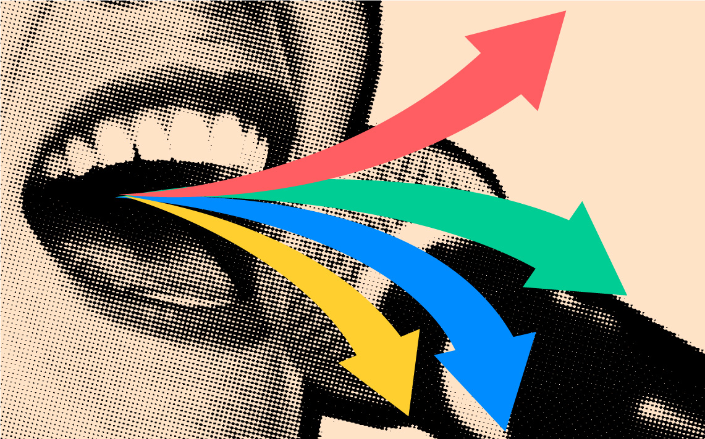
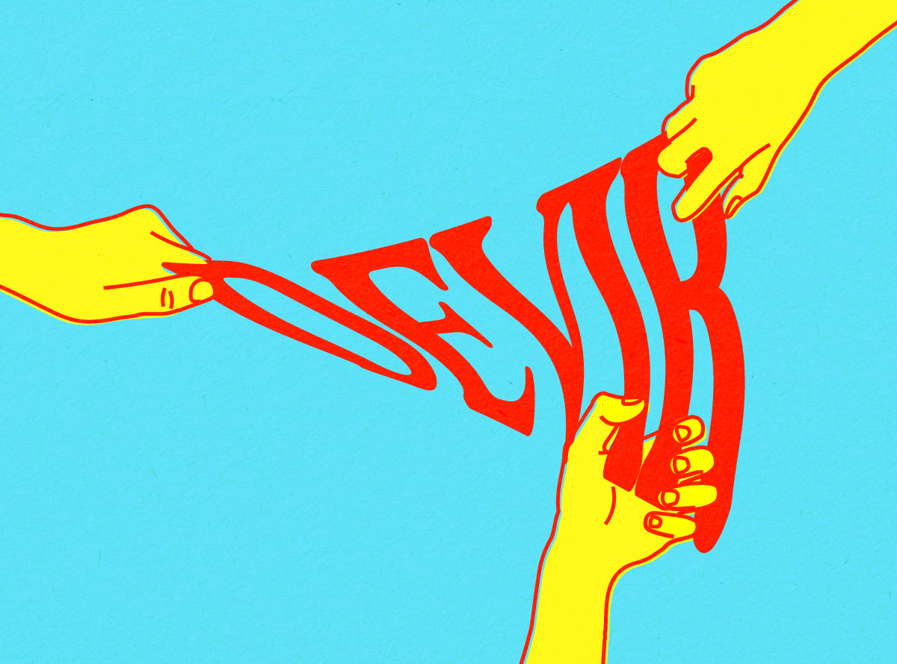
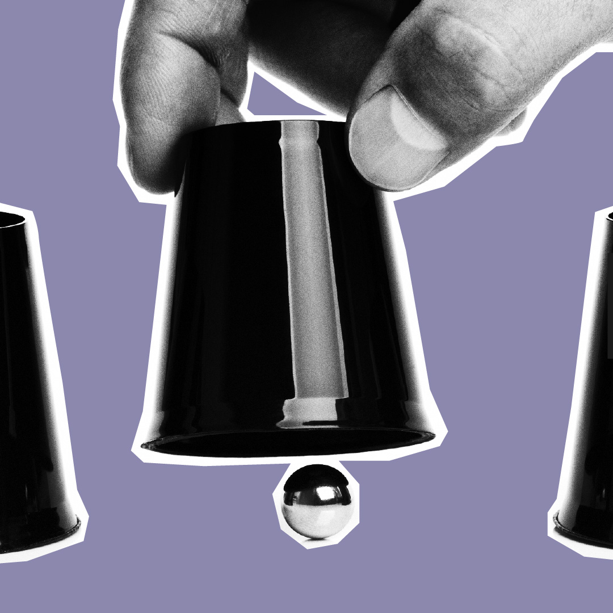
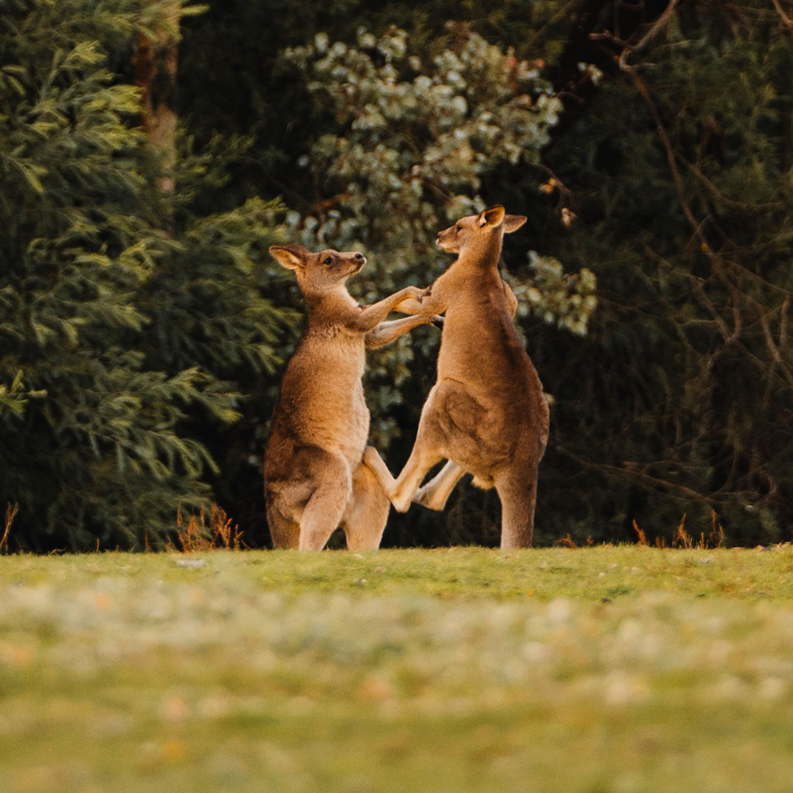

tudo o que você precisa saber sobre o relatório da cpi da covid
5 anos: o saldo do impeachment de dilma para o brasil
os múltiplos sentidos da arte de hélio oiticica
cientistas do brasil que você precisa conhecer

tri de 1970: o futebol entre a magia e o terror
cinusp paulo emílio
nova home — nexo jornal

ilustrações — nexo jornal

é por quilo – comidas que explicam o brasil

ilustrações — gama revista

politiquês

webstories